Una hoja de tabaco cuyo nervio central es una carretera que termina en un punto: una parada en la ruta. Cada candidata en un color y en la paleta (tabaco, ámbar, rojo), a 180, 32 y 16 px, dentro de la zona segura del ícono adaptable (el círculo del 80 por ciento, a rayas), y con la marca escrita.
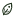
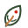
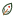
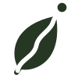
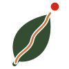
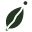
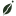
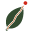
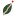
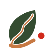
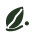
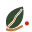
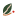
Grupos: píxeles oscuros conectados (luma menor de 128 sobre blanco, 8 vecinos), contados por evidence/m7-logo/logo66.py; salida completa en clusters.txt. La búsqueda de marca registrada no se hizo aquí.